RogueBit 攻略
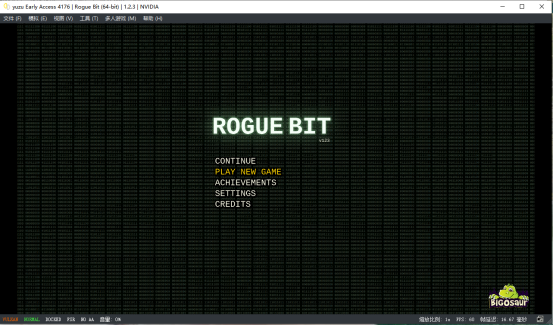
按C开始游戏(continue), 其它快捷键(M:菜单, wasd:方向,方向键也行,X:游戏中提示)
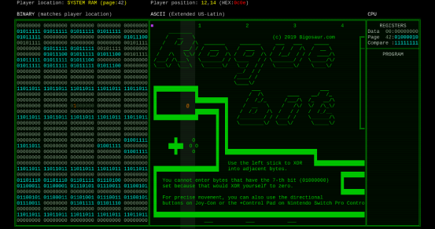
按方向键一直向右边走
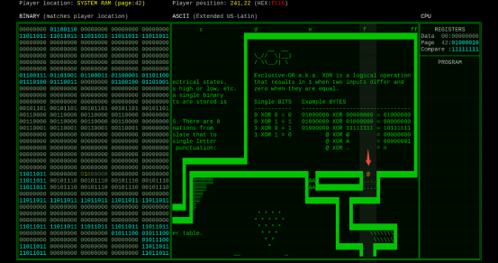
从右侧这边下去
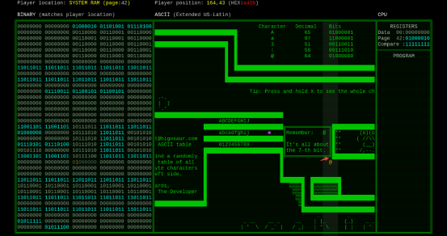
从这个角落进框里
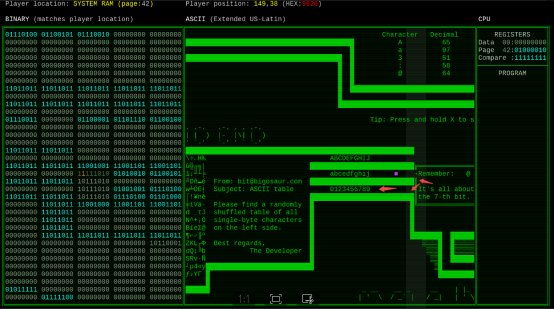
从这边框进去吃紫块,再回来边框下去通过下面一行
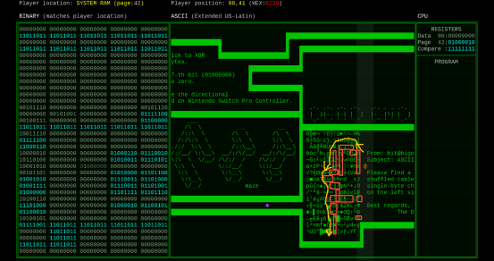
这是一个迷宫,就是一个劲的尝试即可,可以像这样标记一下哪些路可走
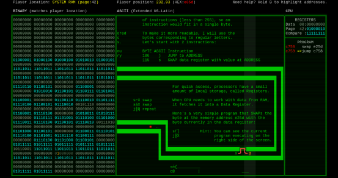
从上面拐一下就可以过去,X会闪, 一显一隐, 当隐藏时,马上走过去即可
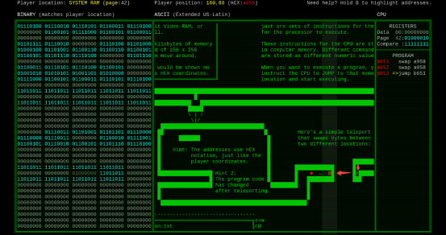
从这走下去会自动跳过去
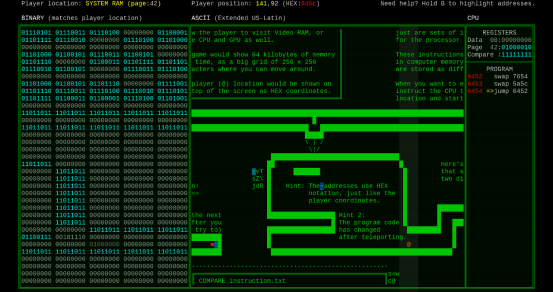
走到这边发现是没路可走了, 这里可以按住X键可以看到The后面有个蓝块, 这个是隐藏地址, 走到这里即可跳到下一块
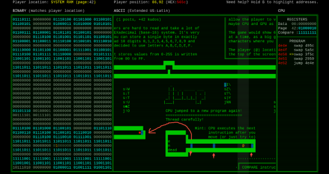
同理按下X键发现三个隐藏地址,走到相应位置可以尝试对应功能, 按上下键两三次
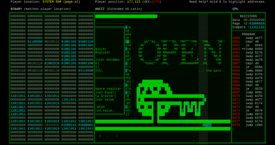
来到这里发现路又被堵了,X键可知跟上面的钥匙有关, 分别走到上面的隐藏位置会一对一的搬走”GATE”
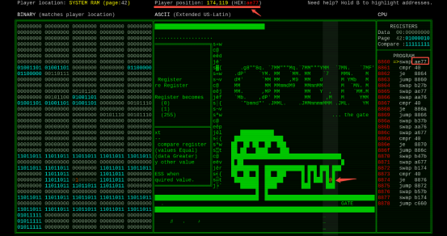
中上有显示当前”@”的内存位置(即游戏用户当前位置), 右侧为汇编指令区域,可以看到第一行代码是要求用户走到这个位置然后下一行比较这个位置的数值是否为0x40, 走到上图位置时再按一下向下键,可以看到右上角的Data变成40了,如下图:
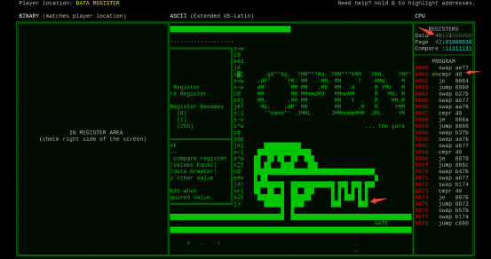
这时用户(@)处于隐藏状态,这个不用管,继续按任意方向键可以看到,用户跳到字母G的位置上了,
走开后,G跑到上面钥匙对应的位置上去了
同理看右侧代码中的地址, 走到对应的位置搬走剩下三个字母
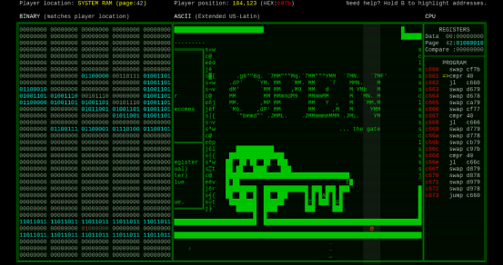
这样就全部搬走了
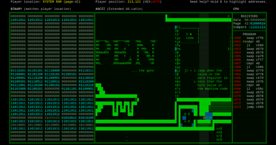
这里也同上操作,看右侧代码地址,走到对应位置,重复操作即可
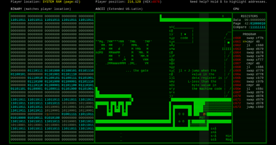
多搬了几次,成这样了, 不影响, 能走上去即可
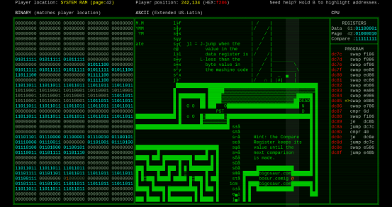
这里卡了很久(一开始不知道右侧代码的含义乱走了很久)
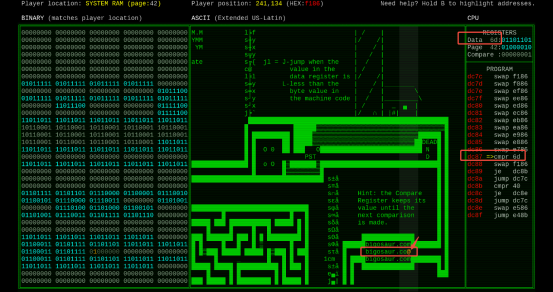
用户要站在这里一直按上下键(随意),不能按左右键,直接到左边字母为三行一样时,这里的Data值就是6d,,然后一直按左键就跳过去了
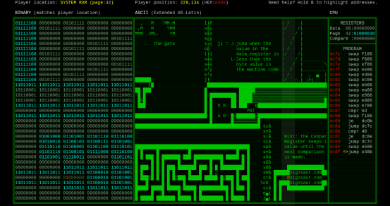
继续前行
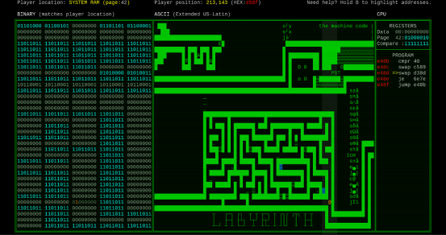
这里按个X, 是明文的迷宫, 简单通过
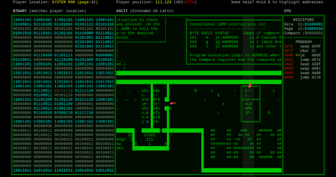
走到这个位置左侧门才能打开, 也是尝试了很久
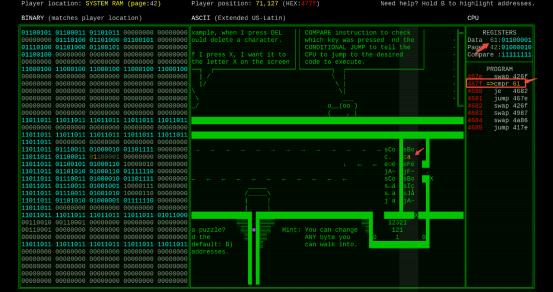
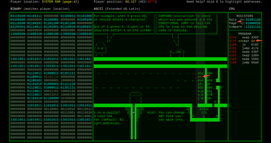
走到这个位置, 它要求的436f没办法去,走到这里可以看到比较条件变了,按下键几次,条件成立,往下执行代码
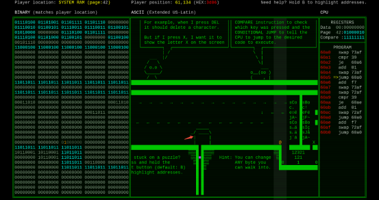
可以看到这个门变化了, 我们就从这里”爬”进去
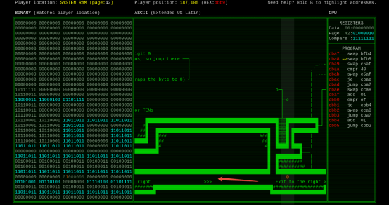
左侧漫长通道的尽头有个紫块可以吃, 吃完再回来,
一路上都提示出口在右侧(Exit to the right >>>)
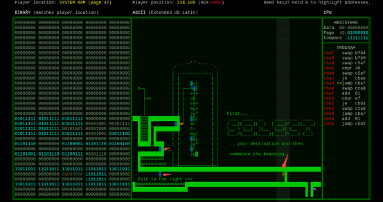
走到这里发现无路了, X键发现有三个隐藏,尝试各种操作, 发现最上面那个一直按右,最下面的地址会向右移动, 那就让它移到最右看看(走到最上面,死循环按右, 一定时间后下来看到最右了没)
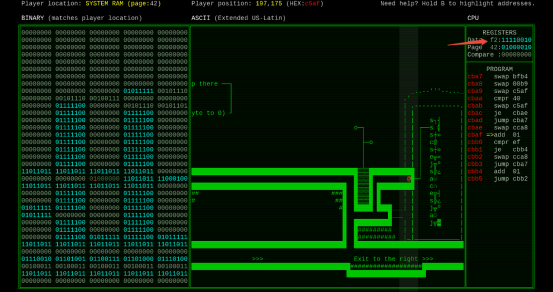
只要看这个值就行,这个值大于ef, 就可以按左键走出来去中间那个隐藏地址按右键就可以直接跳下去了, 不用自己走远路下去
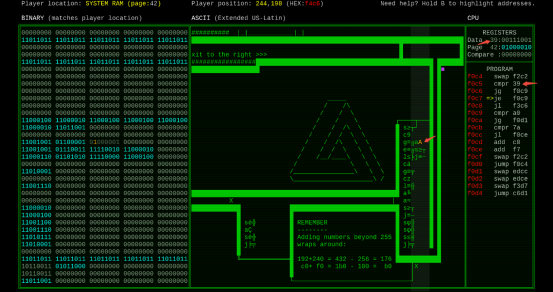
待在这个位置旁边一直按左右键, 当data>=39时循环一次加1,当data<39时循环一次加41,下面代码提示,大于或等于39就继续对比, data > a0 就能跳到最下面的代码执行, 否则会在上半段一直死循环, 所以data=a0-41只要在60到78之间应该都可以, 所以一开始得先跑到上一行的C9的9那边让data累加到60~78之间时跑回上图位置,让累加值变回41,这样下一次循环后的结果就会大于a0
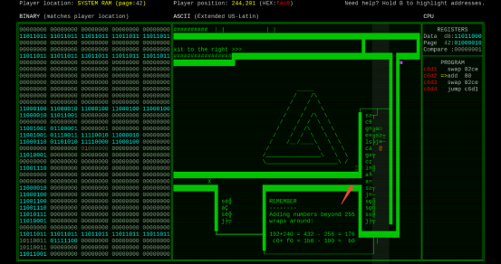
门没了
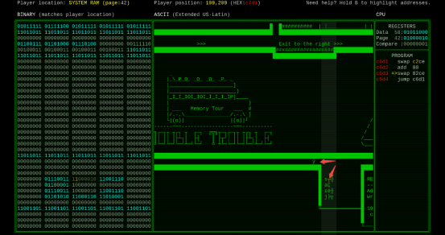
这个位置多跑几次X就变值了,就成一个可以通过的就可以
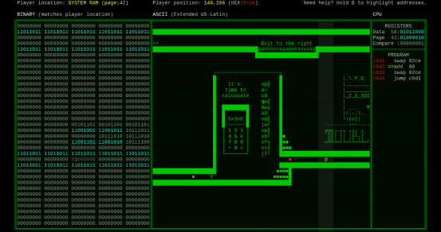
左侧也有一个X挡住,得回到上一图的中间第三行地方改这个值,再回来门就可以过了操作跟上图差不多, 过了门,又来一个差不多的, 那就一样的操作,看右侧代码提示跟数值的变化,
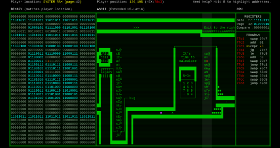
当Data=F7时上移,此时会变成第次加41, F7+41=38就能满足跳转条件
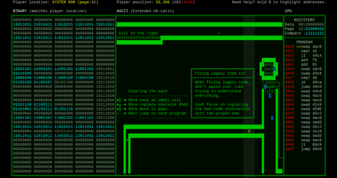
左边有挡,按X键提示右侧上方有隐藏地址,可以到对应地址操作一下看变化
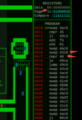
多次操作后可以看到Data的值会从40~45之间变化, 与40对比前一行的地址也会跟着data的值变化,40c8~45c8, 所以当执行到这一行时,@的位置刚好在这个地址上时就可以开门通过
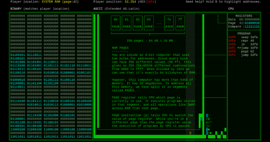
到这里是死路, 有个隐藏地址, 直接走上去就通过了
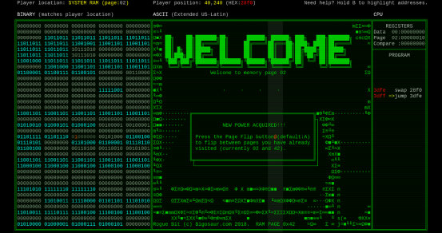
这里被框在这里面了,怎么都走不出来, 只能乱尝试了, 键盘上所有按键都按了一遍(先前百度都找不到相关攻略,只能自己乱试, 后面才知道外网是有教程视频,但全英文的听不懂,但有点作用,可以看界面变化猜一些操作), 在这个界面按下上键都会有切换界面的效果,按C键也有切换效果, 根据切换后的效果看, 上下键应该是预览各界面用的,不能操作移动@, C键切换完界面可以操作移动@,
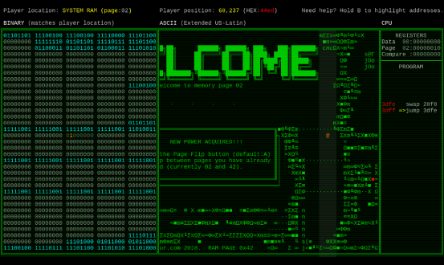
往下移到线上时按C键切换界面后又可以移动了,可以继续下移
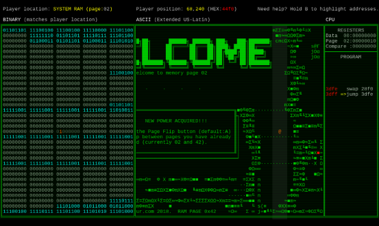
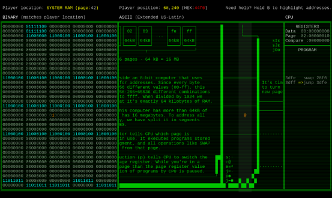
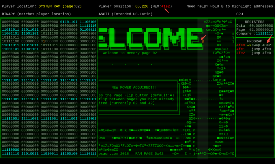
走到这里按下键切换界面看到墙出了一个口子
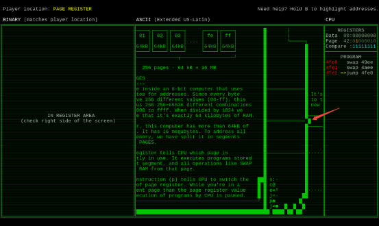
此时按上键切回界面,再按右键走出隐藏地址再按C键切换界面可以看到缺口还在,那就往下走到这里
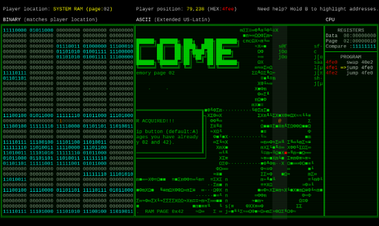
就这样按C键来回切,就可以走到这里了,继续切界面往下走吃红块
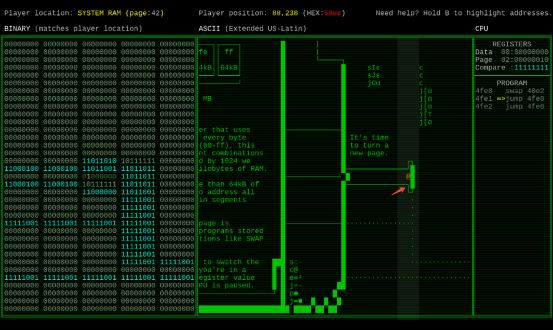
只有这个角落能往下走
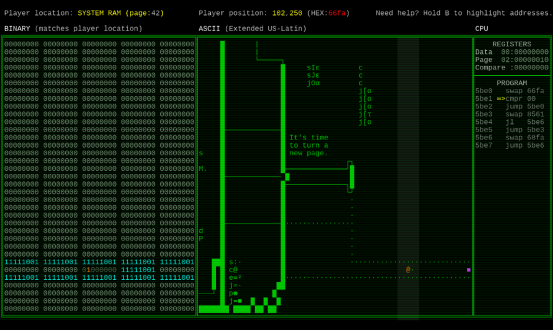
要过去吃紫块, 被挡过不去,切回界面去操作
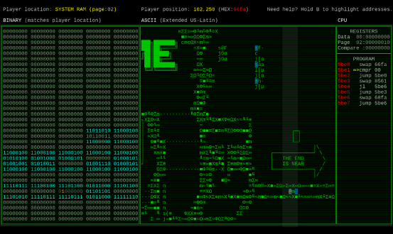
有隐藏地址就有操作空间
按右几次到这个界面的这行代码,然后的操作就是(下下右,上上右),具体如下:按下键一次
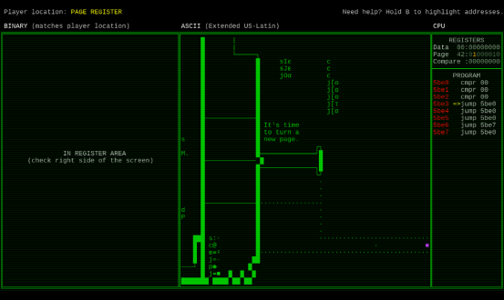
看到这个界面再看一次下键
到这个界面与右侧代码区的这行,此时按右键一次往下执行一行代码
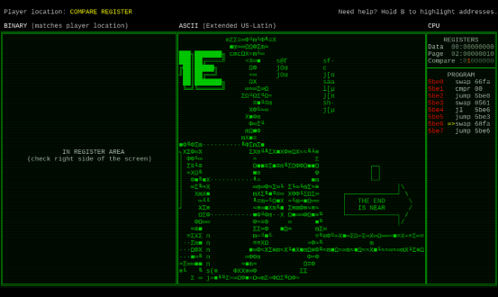
这里按向上键一次
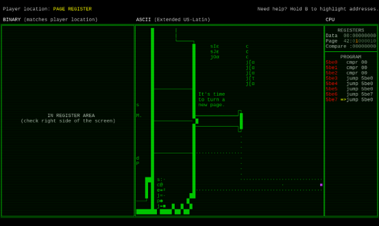
再按上一次
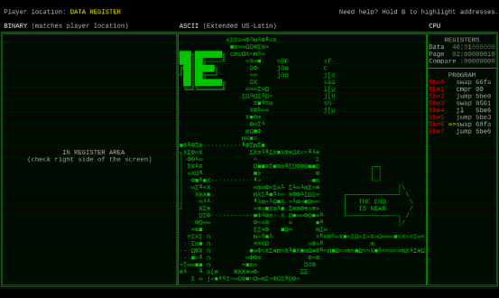
回到这个界面的这一行代码, 然后再按一次右键就可以走到m的右侧了
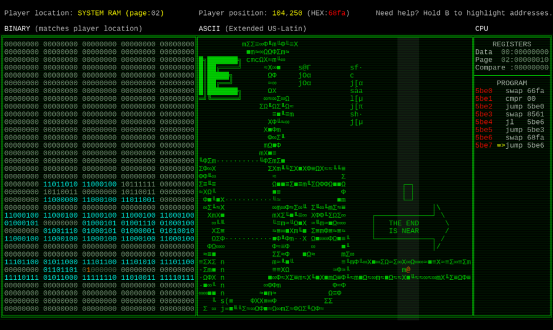
按C键切换界面
吃完紫块往上走,再进框内吃红块,游戏通关